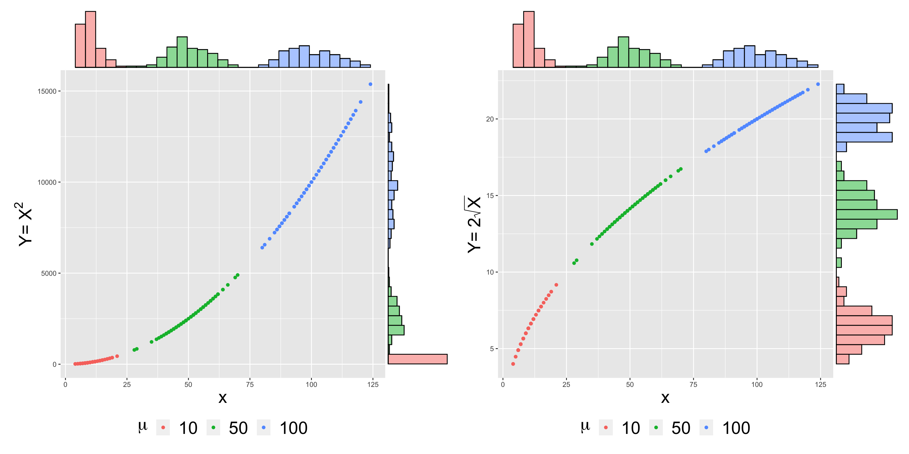
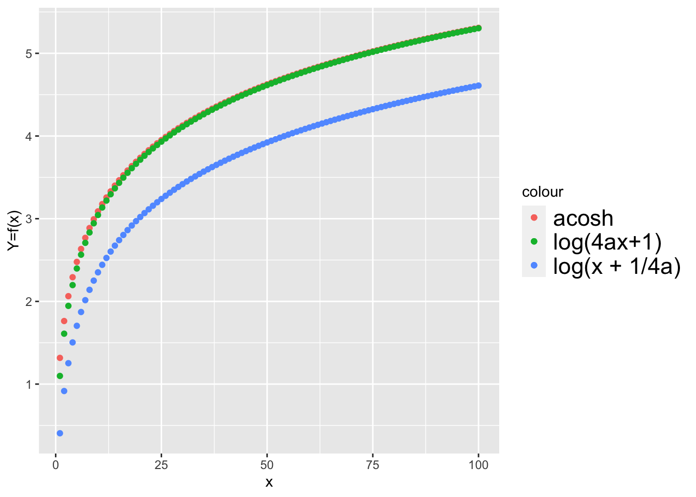

Error Propagation
Let \(X\) be a random variable: \(X \propto p(\theta)\)
Let \(f(X)\) be a transformation \(X \to Y = f(X)\)
Then we have the following relations between the various expectations. \[ \begin{array}{lll} E[X] &=\mu & \to E[Y] = f(\mu) \\ Var[X] &=\sigma^2 & \to Var[Y] = |f'(X=\mu)|^2 \times \sigma^2 \end{array} \]
Let’s illustrate this with \(X \propto Pois(\lambda)\) and two different transformations:
\(f(X)=X^2\) (left plot) and \(f(X)= 2\sqrt{X}\) (right plot). In both cases \(X\) was sampled from three different distributions: \(\lambda=(10,50,100)\).
Code for X ~ Poisson(mu)
set.seed(42)
N=100
mu=c(10, 50, 100) # means for Poisson
x <- rpois(N*length(mu), lambda=mu) # generate x ~ Pois
g <- rep(mu,N) # group label
# data frame with two different transformation
df = data.frame(x, y1=x^2, y2=2*sqrt(x), g)
leg <- labs(color=expression(mu))
th <- theme(legend.position="bottom",
legend.text=element_text(size=rel(2)),
legend.title = element_text(size=rel(2)),
axis.title = element_text(size=rel(2)) )
yl1 <- ylab(expression("Y="~X^2))
yl2 <- ylab(expression("Y="~2 * sqrt(X)))
p1 <- df %>% ggplot(aes(x,y1,color=as.factor(g))) + geom_point() + leg + yl1 + th
p2 <- df %>% ggplot(aes(x,y2,color=as.factor(g))) + geom_point() + leg + yl2 + th
p1m <- ggMarginal(p1, type="histogram", groupFill=TRUE)
p2m <- ggMarginal(p2, type="histogram", groupFill=TRUE)
patchwork::wrap_elements(p1m) + patchwork::wrap_elements(p2m) + plot_layout(ncol=2)
ggsave('vst.png')Saving 16 x 8 in image
Code
| g | mean_x | var_x | var_y1 | var_y2 |
|---|---|---|---|---|
| 10 | 10.3 | 13.0 | 7080.3 | 1.2 |
| 50 | 50.2 | 64.5 | 657231.9 | 1.3 |
| 100 | 99.8 | 98.2 | 4004616.3 | 1.0 |
Notice that \(f(X) = 2 \sqrt{X}\) “stabilizes” the variance of the transformed variable \(Y\).
This finding can be generalized.
Variance Stabilization
Assume our observed data is “heteroskedastic”, i.e. \(VAR[X]\) is some function of \(E[X] \equiv \mu\)
One specific example could be a Negative Binomial: \(X \propto NB(\mu, \alpha=1/\theta)\) where
\[ Var[X] = g(E[X]) = \mu + \alpha \cdot \mu^2 \]
This heteroskedastisity can be removed by choosing a transformation \(f\) such that \(|f'(x=\mu)|^2\) is the inverse of \(g\).
- for \(\alpha = 0\): chose \(|f'(x=\mu)|^2 = \mu^{-1} \to f(x)=2\sqrt{x}\)
- for \(\alpha > 0\): chose \(|f'(x=\mu)|^2 = (\mu + \alpha\mu^2)^{-1} \to\) \[ f(x) = \frac{1}{\sqrt{\alpha}} acosh(2\alpha x + 1) \\ \] …exact solution if \(\alpha\) is known
Simpler Transformations
Only the derivative \(f'(x=\mu)\) is relevant for variance stabilization, so we can have equivalent transformation for variance stabilization.
Code
x=1:100 # range of x
a=0.5 # dispersion
gc=acosh(2*a*x + 1) # exact: upto division by sqrt(a)
gl=log(4*a*x+1) # good for large x
g2= log(x + 1/(4*a)) # shifted by log(4a) with same derivative
data.frame(x, acosh=gc, log1=gl, log2=g2) %>%
ggplot() +
geom_point(aes(x,acosh,color="acosh")) +
geom_point(aes(x,log1,color="log(4ax+1)")) +
geom_point(aes(x,log2,color="log(x + 1/4a)")) +
ylab("Y=f(x)") +
theme(legend.text=element_text(size=rel(1.5)))
Log-Normalization
\(\log(x + 1/4\alpha)\) has same derivative as \(acosh(2\alpha x +1)\) ✓